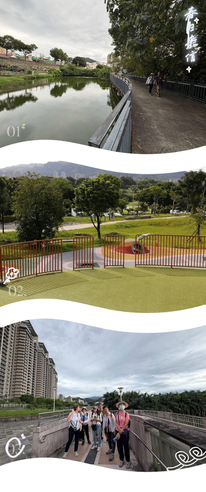

圳水川流 孕育大地
一條圳，從引水到排水，串起五庄的田地與信仰。
梳理清乾隆 27 年（1762 年）大坪林圳引水石硿通水以來的歷史脈絡、東西幹線空間節點，以及大坪林五庄重要土地公廟信仰點。
-

大坪林圳東西幹線
開天宮下方的岩壁，留著大坪林圳的引水石硿。從這裡沿東西幹線往下讀，可以看見圳水如何分流，又如何走進沿線聚落。
一條圳，從引水到排水，串起五庄的田地與信仰。
梳理清乾隆 27 年（1762 年）大坪林圳引水石硿通水以來的歷史脈絡、東西幹線空間節點，以及大坪林五庄重要土地公廟信仰點。

開天宮下方的岩壁，留著大坪林圳的引水石硿。從這裡沿東西幹線往下讀，可以看見圳水如何分流，又如何走進沿線聚落。